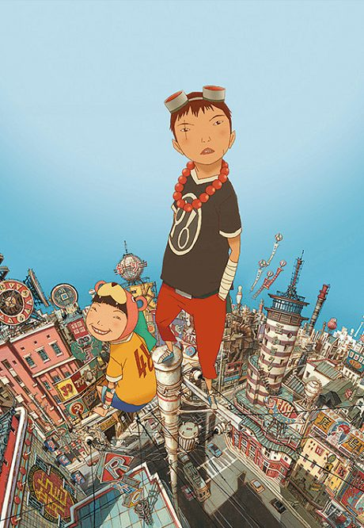
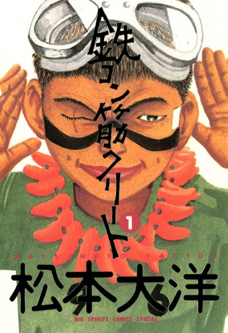

Anime
Manga2006 · Action, Psychological, Supernatural
Tekkonkinkreet
鉄コン筋クリート
AniList7.7
Animeter—
Movie1 ep
MangaFilm
Anime finished. Where does the manga pick up?
StatusNo source yet
We looked for where the anime ends in the manga but found no source we trust yet. The manga is 33 chapters, finished.